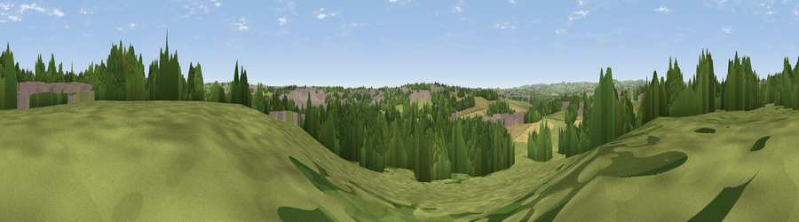

Viewpoint near Hilcote
#37089 in England · top 70% of its area beats it · near HilcoteWhere it is
The exact computed spot (SK 44475 58375). Click the marker for map links.
The view, rendered

A 360° render of this exact spot computed from the terrain model, tree cover and land cover — summer colours, afternoon light, calibrated against photographs of famous viewpoints. Real trees, hedges and buildings will differ in detail.
The panorama
Grey silhouette: terrain skyline in each direction (720 bearings, Earth curvature and refraction included). Dashed green: skyline with trees (+15 m) and buildings (+8 m) as obstacles. Blue strip: how far the ground is visible on each bearing.
Where the view opens
Wedge length = distance to the farthest visible ground on that bearing (vegetation-aware). Rings at 10, 25 and 50 km.
What fills the view
45% grassland · 29% woodland · 13% cropland · 12% built-up
Angular shares of the visible panorama (visual magnitude), not map area. Landscape diversity 0.54 (0–1 Shannon).
Key numbers
More beautiful places nearby
The staircase of upgrades: each row has a higher view potential than everything closer. Driving times are estimates from straight-line distance, calibrated against real road routing — check an actual route before setting out.
| Place | Direction | Drive | Score |
|---|---|---|---|
| Viewpoint near Huthwaite | NE · 2 km | ~5 min | 51.8 |
| Viewpoint near Tibshelf | NNE · 3 km | ~6 min | 53.2 |
| Viewpoint near Stainsby | NNE · 6 km | ~13 min | 53.9 |
| Viewpoint near Brackenfield | W · 9 km | ~17 min | 68.3 |
| Crich Stand | WSW · 10 km | ~20 min | 73.0 |
| Alport Height | WSW · 16 km | ~28 min | 73.9 |
| Tissington Hill | W · 30 km | ~47 min | 75.5 |
| Viewpoint near Woodhouse Eaves | S · 44 km | ~64 min | 77.7 |
53.12070, -1.33690 · source: screening · position refined by local search. Computed location — check access rights before visiting.